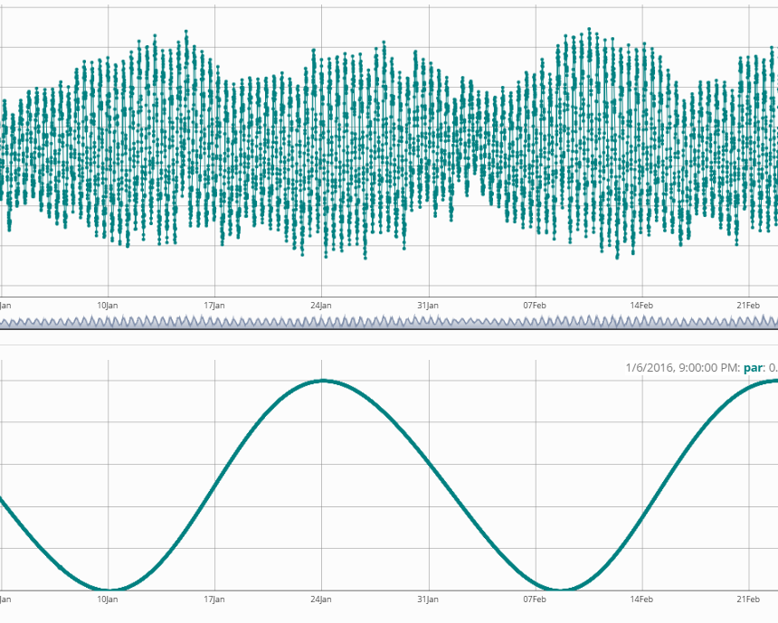

Hydrometeo data collected at stations along the Belgian coast and off-shore along the Flemish Banks.
Columns available after log in
The Monitoring Network Flemish Banks (Meetnet Vlaamse Banken) was set up for the acquisition of real-time oceanographic and meteorological data along the Belgian coast and on the Belgian continental shelf. It is a sensor network measuring waves, tidal height, current and water temperature; meteorological parameters are wind, air pressure, air temperature and rainfall. Data for use in academic research can be obtainded after registering to the MVB system . Data for commercial use or other should be requested kust@vlaanderen.be.
When using this tool, please acknowledge the LifeWatch Data Explorer in your work with the statment written below. Please also acknowledge the individual datasets used and mind their individual licenses: Find the complete list in this link to the IMIS metadata record of this data type.
This work makes use of the LifeWatch Data Explorer provided by VLIZ and funded by Research Foundation - Flanders (FWO) as part of the Belgian contribution to LifeWatch.
If you retrieved these data using the LifeWatch Data Explorer R package, you should also cite it as:
Francisco Hernandez, Nick Dillen and Salvador Fernández-Bejarano (2021). lwdataexplorer: Access to data from the LifeWatch Data Explorer. R package version 0.0.0.9000. https://lifewatch.github.io/lwdataexplorer/
1 TAW (from Dutch: Tweede Algemeene Waterpassing) is a term used only in Belgium; it is a horizontal water level reference level. Source: proz.com